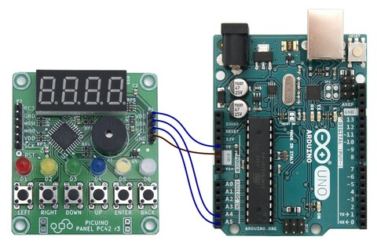

2. PC42 Control Panel Installation¶
Goals¶
- Connect the PC42 control panel to an Arduino board
- Install the :download:` libraries needed to program the PC42 panel <_downloads/PC42.zip>`
- Install the
Ardublock-Picuino toolto program with graphics blocks - Install other
Arduino auxiliary libraries
Facility¶
To install the Picuino PC42 control panel, it is necessary to carry out two operations:
- Connect the PC42 panel to an Arduino using 4 male-female cables
- Install the PC42 control library
In addition, the Ardublock block programming tool can be added.
Connection with Arduino UNO¶
{kind=link}
The necessary connections to communicate the Arduino UNO board with the PC42 panel are listed in the following table:
Pin Color Panel PC42 Arduino UNO 1 Blue Vdd +5V Vdd +5V 2 Blue SDA A4 3 Blue SCL TO 5 4 Brown GND 0V GND 0V
The PC42 panel connections are reverse polarity protected, so the panel will not be damaged even if the wires are interchanged. The only connection that can cause permanent damage to the board is a supply above 5 volts, which can be found on the "Vin" pin of the Arduino when powered by an external battery.
Connection with Arduino Nano¶

The necessary connections to communicate the Arduino Nano board with the PC42 panel are listed in the following table:
Pin Color Panel PC42 Arduino nano 1 Blue Vdd +5V Vdd +5V 2 Blue SDA A4 3 Blue SCL TO 5 4 Brown GND 0V GND 0V
Installation of the Arduino environment¶
In order to work with the Arduino board, it is necessary to install the Arduino programming software and the corresponding drivers.
In the section Arduino troubleshooting you can find all the steps to install the Arduino board software and solve the most frequent installation errors.
Installation of the library for the PC42 panel¶
In order for the PC42 control panel to work, it is necessary to download and install a library for Arduino.
Download the PC42 control panel library for Arduino.
Follow the installation steps described on the next page.
Ardublock installation¶
Ardublock is a tool for Arduino that allows programming with graphic blocks. It is oriented to make programming easier for inexperienced users, greatly simplifying the task of creating programs with a simple graphical environment.

The Ardublock-Picuino version is even simpler than the original Ardublock project and contains the necessary instructions for programming the PC42 control panel.
To install the latest version of Ardublock-Picuino, follow these steps:
Download the
Ardublock-Picuino toolCopy the file to the Arduino directory. The directory can be found in the Arduino environment, by pressing the menu:
File... Preferences... Project location.Unzip the file in the Arduino directory.
Close and reopen the Arduino environment. The new tool should appear in the menu:
Tools... Ardublock
Installation of auxiliary libraries for Arduino¶
These libraries allow the Arduino board to control peripherals such as an LCD display panel or infrared emitters and receivers.
The following libraries can be found together in this package:
dht11DHT11 humidity and temperature sensor controlIRremotecontrol infrared emitters and receiversLiquidCrystalcontrol LCD display panelsNewliquidCrystalLCD display panel controlSCoopmultitasking programmingSDPlusSD memory managementmakeblockhandling Makeblock robots and gadgetsPC42handling of the Picuino PC42 control panel
To install all the libraries at once, follow these steps:
Download the :download:` archive with the libraries for Arduino <_downloads/arduino-libraries.zip>`
Copy the file to the Arduino directory. The directory can be found in the Arduino environment, by pressing the menu:
File... Preferences... Project location.Unzip the file in the Arduino directory.
Close and reopen the Arduino environment. The new libraries should appear in the menu:
Program... Include library...
To install individual libraries using the Arduino environment, you can read the following link on how to add a library to the Arduino environment.